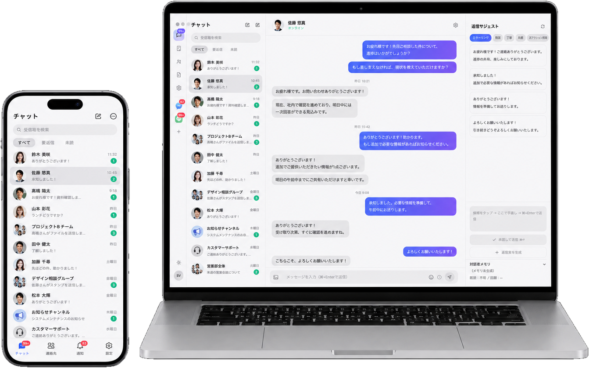
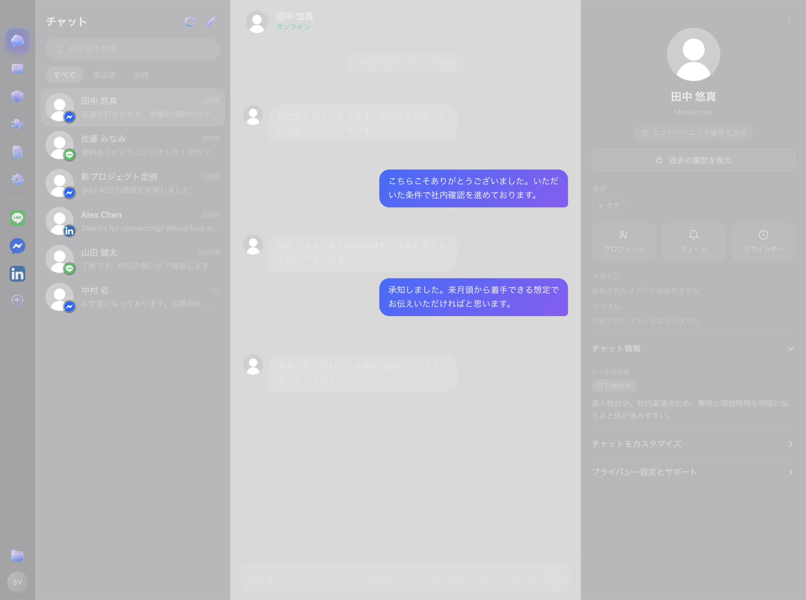

連絡を1か所に返信はAIと一緒に片づける
Messenger・LINE・LinkedIn・Gmail を1つの受信箱に。読んでも相手に既読は付かず、返信はあなたの言い回しを学んだ下書きを承認するだけ。
- ✓ 読んでも既読が付かない返信を送った時にだけ既読が付く
- ✓ あなたの言い回しで下書き相手ごとの文脈と自分の文体を学習
© Stock Value, Inc.
ダウンロード
macOS 版（Apple Silicon）
Sendy をダウンロードMessenger の過去のやり取りが出てこないとき
Messenger の暗号化されたチャットは、会話ごとに1回だけ取り込み操作が必要です。画面上部の 相手の名前 を押してチャット設定を開き、「過去の履歴を復元」 を押してください。

※ 途中で Messenger の暗証番号（PIN）を求められたら入力してください。取り込みはあなたの Mac の中だけで行われます。
※ 何度でも実行できます。押すたびに最新の内容で取り直します。
※ 何度でも実行できます。押すたびに最新の内容で取り直します。
対応OSmacOS 12 以降・Apple Silicon（M1〜）
データメッセージ本文とログイン情報は端末内にのみ保存